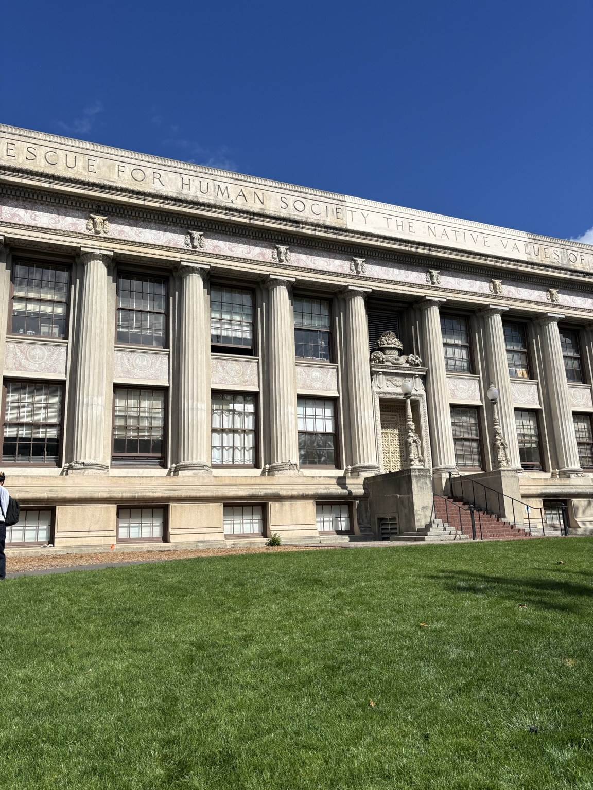
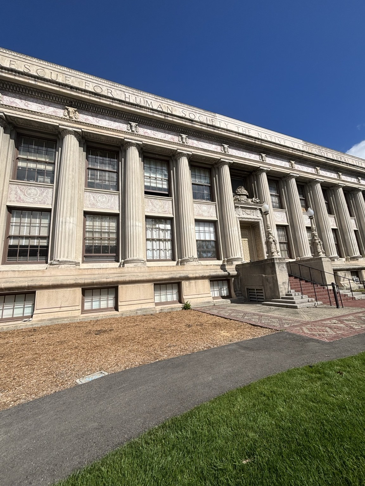
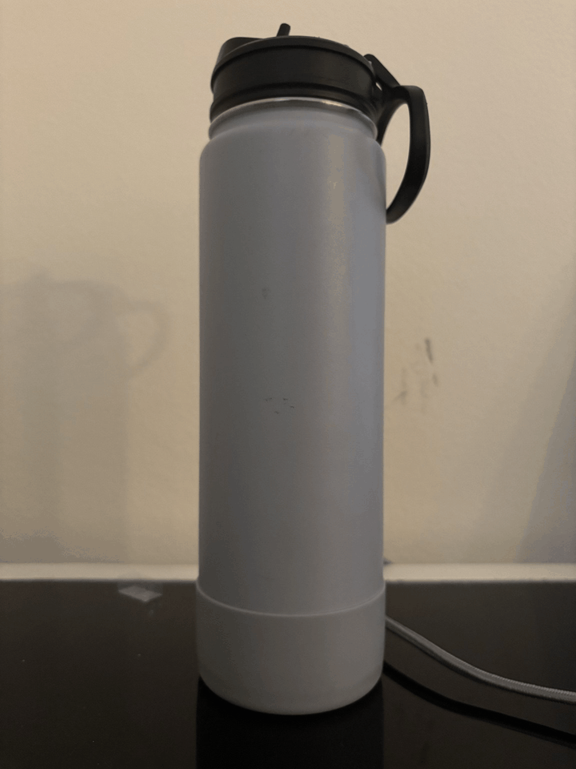
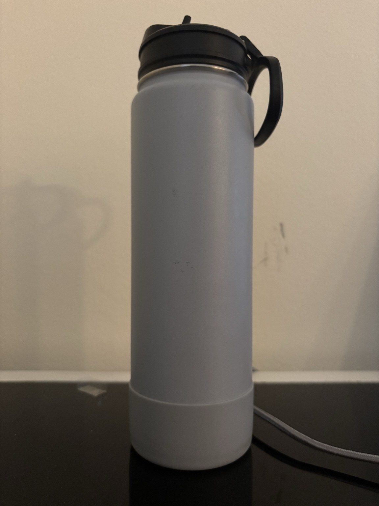
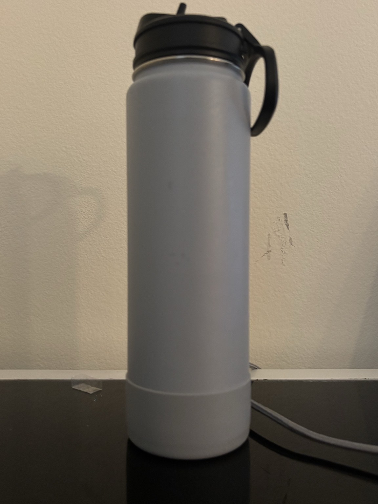
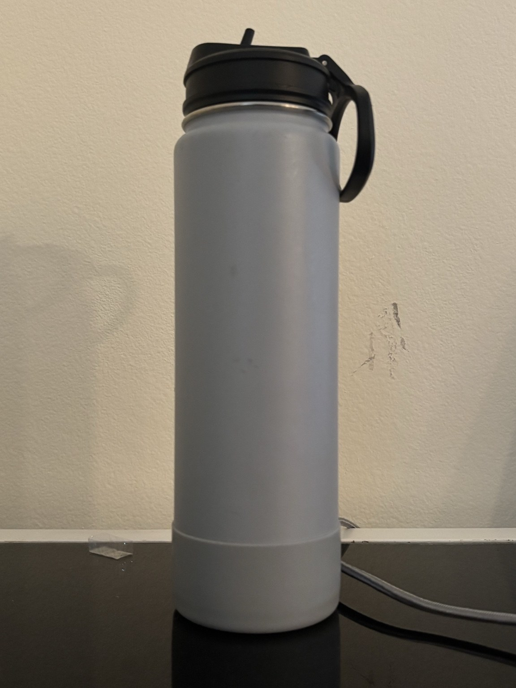
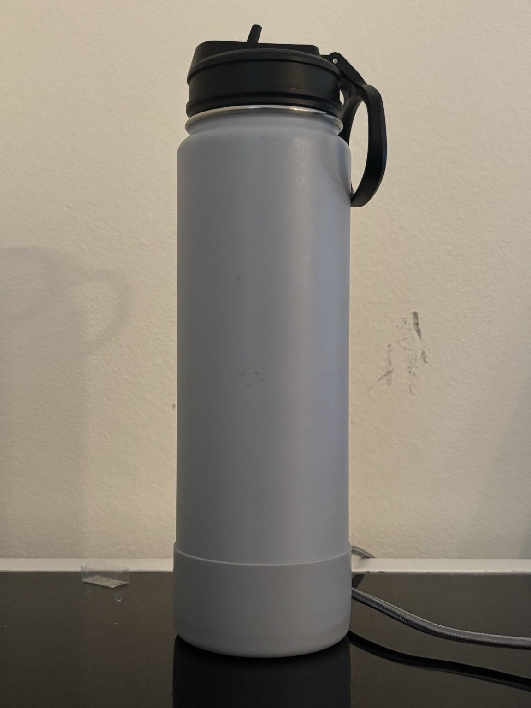
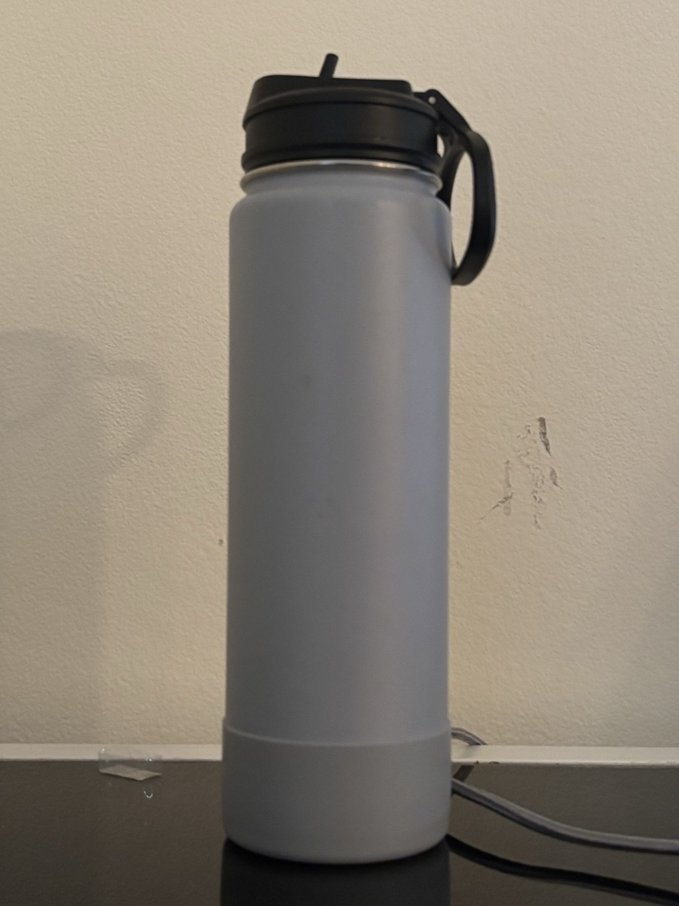
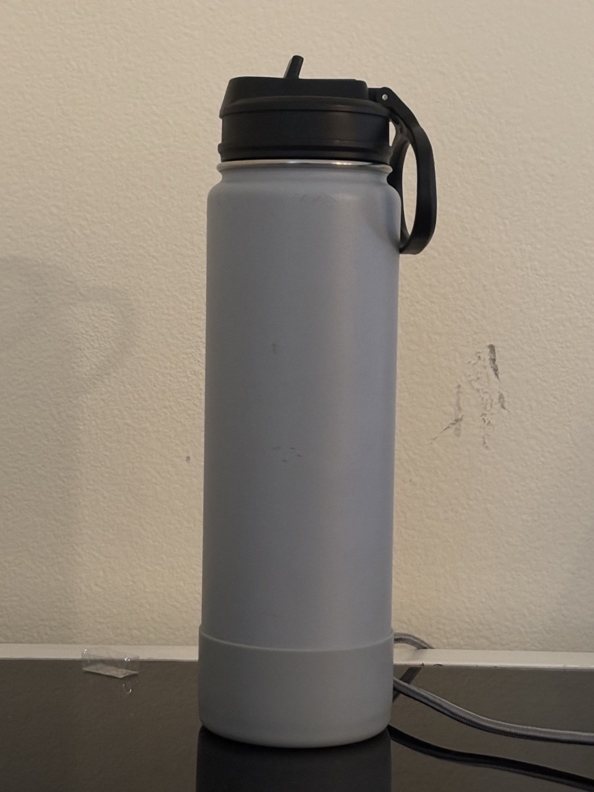

This mini-project explores perspective through three experiments: a portrait, an architectural scene, and a dolly zoom. In each case, I changed the camera's position and zoom while trying to keep the main subject approximately the same size.
Portrait Perspective
Selfie: the wrong way vs. the right way
When the camera is very close to the face, small differences in depth become large relative to the distances from the camera. Therefore, features that stick out, like the nose, appear much larger than features farther back, which creates the exaggerated facial proportions. When the camera is moved further back, it reduces the proportion in the differences of the relative distances, which produces a "better looking" portrait.
Architectural Perspective
Perspective compression


When the camera is close to the building, the differences in depth are large relative to the camera distance, so the nearby parts appear much larger than the further portions. This makes the building look more stretched in depth. Moving farther away reduces the relative distance differences, so the building appears flatter.
Dolly Zoom
Moving back while zooming in

For the dolly zoom, I moved the camera backward while zooming in so that the water bottle stayed approximately the same size. The bottle remains relatively stable, but the field of view narrows and the background appears to change scale. This creates the dolly zoom affect.





